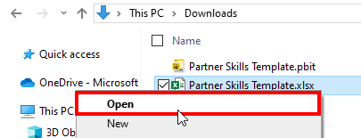
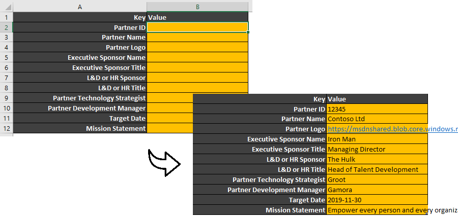
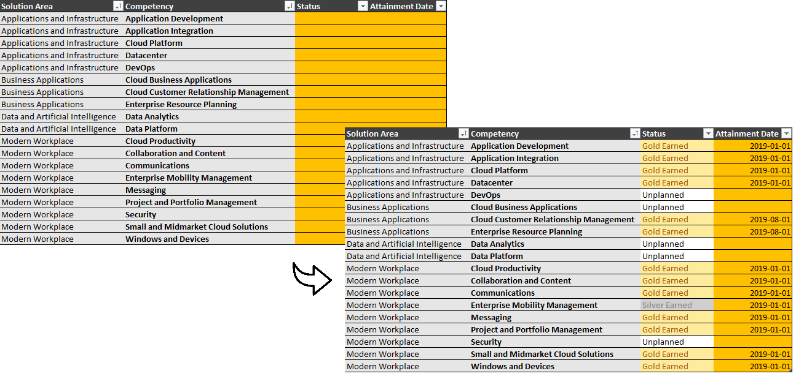
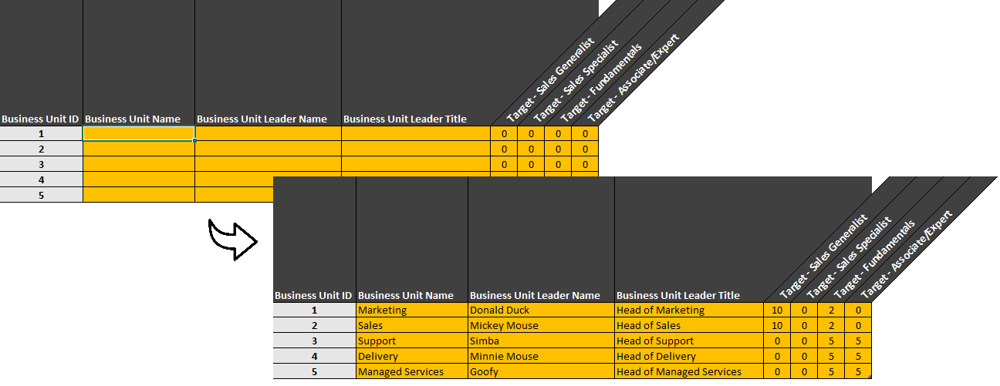
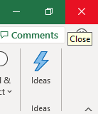
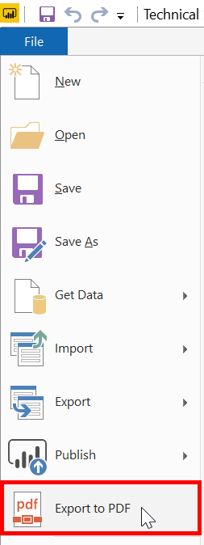
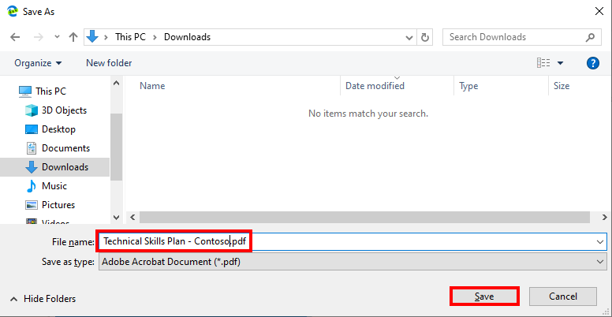

Skills Plan
Table of Contents
- Prerequisites
- Completed Sample
- 01 - Download the Template Files
- 02 - Open the Excel Spreadsheet
- 03 - Update the Worksheet: Partner
- 04 - Update the Worksheet: Competencies
- 05 - Update the Worksheet: Business Unit
- 06 - Update the Worksheet: Tracker
- 07 - Save and Close the Excel Spreadsheet
- 08 - Copy the Excel Spreadsheet File Path
- 09 - Initialize the Power BI Template
- 10 - Export a PDF
Prerequisites
Before you begin, please ensure you have the latest version of Microsoft Power BI Desktop installed on your local machine.
Completed Sample
Click the link below to download a completed example of a Technical Skills Plan for Contoso Ltd (a fictitious company).
Step 1 - Download the Template Files
- Download the Partner Skills Template files to your local machine by clicking the links below.
- Excel Spreadsheet (Data Capture)
- Power BI Template (Report)
Step 2 - Open the Excel Spreadsheet
-
Navigate to the folder in which you have saved the files (e.g. Downloads).
 Tip: Create a copy of the Excel Spreadsheet to retain an empty version for future use (e.g. Technical Skills Plan - Contoso.xlsx).
Tip: Create a copy of the Excel Spreadsheet to retain an empty version for future use (e.g. Technical Skills Plan - Contoso.xlsx). -
Open the spreadsheet by double-clicking the file or right-click the file and click Open.
 -
Click the Enable Editing button at the top of the spreadsheet.

Step 3 - Update Worksheet: Partner
- Navigate to the first worksheet (1. Partner) and populate the highlighted cells.

Step 4 - Update Worksheet: Competencies
- Navigate to the second worksheet (2. Competencies) and populate the highlighted cells.

Step 5 - Update Worksheet: Business Unit
- Navigate to the third worksheet (3. Business Unit) and populate the highlighted cells.

Step 6 - Update Worksheet: Tracker
- Navigate to the fourth worksheet (4. Tracker) and populate the highlighted cells.

Step 7 - Save and Close the Excel Spreadsheet
- Click the Save icon located in the top left hand corner of the window.

- Click the Close icon located in the top right hand corner of the window.

Step 8 - Copy the Excel Spreadsheet File Path
- Navigate to directory which contains the Excel spreadsheet, while holding down the SHIFT key, right-click on the selected file and click Copy as path.

Step 9 - Initialize the Power BI Template
- Open the Power BI template (Partner Skills Template.pbit) by double clicking the file.

- Paste the path into Data source location and click Load.

- Once the report has loaded, click the Save icon.

- Provide a file name (e.g. Technical Skills Plan) and click Save.

Step 10 - Export a PDF
- Click File located in the top left hand corner of the window and click Export to PDF.
 - Wait until the PDF has been generated.

- Click the Save icon located in the top right hand corner of the browser window.

- Rename the file (e.g. Technical Skills Plan - Contoso.pdf) and click Save.

Congratulations! You have just created an instance of a technical skills plan from the Power BI template and exported a PDF. This instance of the skills plan is connected to the underlying spreadsheet. Any changes in the data will be reflected in the report.
Note: If you wanted to create another skills plan, create a copy of the empty spreadsheet template, open the copy, and resume from Step 3.